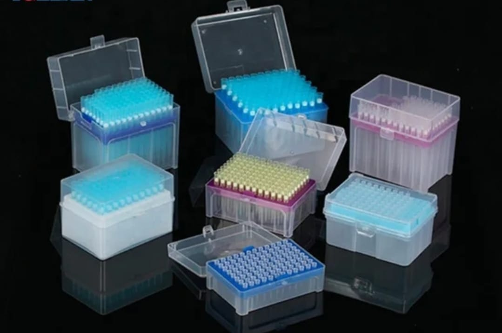

Product families
Product families presented with clarity, depth, and focus.
Our product categories have been organized to help customers quickly identify the equipment, consumables, reagents, and laboratory supplies that best meet their operational and clinical requirements..

Certified consumables
We supply reliable laboratory instruments and analytical equipment designed to deliver accurate results in clinical diagnostics, research laboratories, educational institutions, and industrial testing environments.
- Laboratory plastics and sample handling items
- PCR plates, pipette tips, and filters
- Sterile, DNase/RNase-free, and cryovial products
Glassware and labware
Core laboratory glassware selected for repeatability, durability, and a clean fit in teaching or professional labs.
- Beakers, flasks, cylinders, and vessels
- General labware for daily use
- Options suited to education and research
Analytical and diagnostic instruments
Performance-focused instruments that support accurate measurement, sample preparation, and dependable analysis.
- Centrifuges and microscopy support
- Instrument sourcing guidance
- Built for precision-driven workflows
Research and development
Products and infrastructure that help R&D teams move from planning to data with dependable supply continuity.
- Research-grade supply families
- Components for method development
- Strong fit for universities and research centers

Mobility and hospital care
Our range of medical consumables includes high-quality disposable products that support infection prevention, patient care, laboratory procedures, and everyday clinical operations.
- Patient-support and mobility equipment
- Hospital room utility items
- Designed for care settings

Safety equipment
We provide certified personal protective equipment and laboratory safety products that help protect healthcare professionals, laboratory personnel, researchers, and industrial
workers while maintaining compliance with safety standards.
- Personal protective equipment
- Biohazard and waste disposal products
- Visual clarity for compliance teams